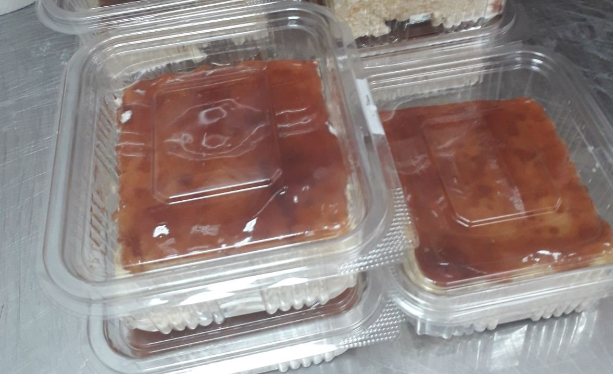

Slatki program
Tri Leće

Neto Količina: 200 gr. +-5%
Alergen info: Sadrži gluten pšenice, mlečna laktoza
Šifra proizvoda: 104 Čuvati na temperaturi do +7C
Sastojci: šećer, pšenično brašno, kukuruzni skrob,
emulgatori: E471 , E472e, E472b,
obrano mleko, so,
sredstva za narastanje testa E450(i), E500(ii),
aroma vanilin, kukuruzni glugokzni sirup, voda,
sredstvo za želiranje E440(i), E202, limunska kiselina,
E150d, aroma karamel, slatka pavlaka, mleko.
Napmena: ne smrzavati.
Proizvodi “Pekara Marcipan Plus” Šajkaška 22, Novi Sad.
Zemlja porekla: Republika Srbija